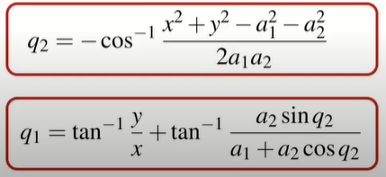

W15 <<
Previous Next >> Inverse kinematics for a 2-joint robot arm using algebra 翻譯
Inverse kinematics for a 2-joint robot arm using geometry 翻譯
這兩部影片是解釋如果給定XY座標二連桿要分別轉多少度才能達到指定座標的算法
這個方法是使用畢式定理
We saw this simple two-link robot in the previous lecture about forward kinematics.
我們在上一堂關於正向運動學的講座中看到了這個簡單的雙連桿
The tooltip pose of this robot is described simply by two numbers,
這個連桿的工具提示動作簡單的用兩個數字來描述
the coordinates x and y with respect to the world coordinate frame.
相對於世界坐標系的坐標x和y
So, the problem here is that given x and y,
所以，這裡的問題是給定x和y，
we want to determine the joined angles, Q1 and Q2.
我們想要確定連接的角度，Q1和Q2。
The solution that we’re going to follow in this particular section is a geometric one.
在這個特殊的部分，我們將要遵循的解是一個幾何解。
We’re going to start with a simple piece of construction.
我們將從一塊簡單的結構開始。
We’re going to overlay the red triangle on top of our robot.
我們要把紅色三角形覆蓋在連桿上面。
We know that the end point coordinate is x,y,
我們知道終點坐標是x，y，
so the vertical height of the triangle is y, the horizontal width is x.
所以三角形的垂直高度是y，水平宽度是x。
And, using Pythagoras theorem, we can write r squared equals x squared plus y squared.
利用畢式定理，我們可以寫出r的平方等於x的平方加上y的平方。
So far, so easy.
到目前為止，一切都很簡單。
Now, we’re going to look at this triangle highlighted here in red and we want to determine
the angle alpha.
現在，我們要看一下這裡用紅色突出顯示的這個三角形，我們想要確定。角度Alpha。
In order to do that, we need to use the cosine rule.
為了達成這一點，我們需要使用餘弦定理。
And, if you’re a little rusty on the cosine rule, here is a bit of a refresher.
如果你對余弦定理有點不熟悉。這裡有一個複習。
We have an arbitrary triangle.
我們有一個任意的三角形。
We don’t have to have any right angles in it
我們不用有任何直角。
and we’re going to label the length of this edge as A and the angle
opposite that edge, we’re going to label as little a.
我們將這條邊的長度標記為A角。
另外在那個邊緣的對面，我們將標記為小a角。
And, we do the same for this edge and this
angle, and this edge and this angle.
我們對邊邊和這角度，以及邊邊和這個角度做同樣的事
So, all together, the sides are labelled capitals
A, B and C, and the angles are labelled little
a, little b, and little c.
所以所有邊都標記為大寫字母 A、B 和 C，角標記為小 a、小 b 和小 c。
So, the cosine rule is simply this relationship here.
所以餘弦定理在這裡就是這種關係
It’s a bit like Pythagoras’ theorem except for this extra term on the end with the cos a in it.
它有點像畢氏定理，除了末尾有額外的 cos a 。
Now, let’s apply the cosine rule to the particular triangle we looked at a moment ago.
現在，我們將餘弦定理應用於我們剛才看到的特定三角形。
It’s pretty straightforward to write down this particular relationship.
寫下這種特殊關係式是非常簡單。
We can isolate the term cos alpha which gives us the angle alpha that we’re interested in.
我們可以分離出 cos α項，它給出了我們α角。
And, it’s defined in terms of the constant link lengths, A1 and A2 and the position of the end effector, x and y.
而且，它是根據恆定連桿長度 A1 和 A2 以及末端執行器的位置 x 和 y 定義的。
We can write this simple relationship between the angles alpha and Q2.
我們可以寫出角度 α 和 Q2 之間的關係。
And, we know from the shape of the cosine function that cos of Q2 must be equal to negative of cos alpha.
而且，我們從餘弦定理的形狀知道，Q2 的 cos 必須等於 -cos α 。
This time, let’s just write an expression
for the cosine of the joined angle Q2.
我們只寫一個表達式 對於連接角 Q2 的餘弦。
Now, we’re going to draw yet another red
triangle and we’re going apply some simple trigonometry here.
現在，我們將繪製另一個紅色三角形，並在此處應用一些簡單的三角函數。
If we know Q2, then we know this length and this length of the red triangle.
如果我們知道 Q2，那我們就知道這個長度和這個紅色三角形的長度。
We can write this relationship for the sine of the joined angle Q2.
我們可以寫出連接角 Q2 的正弦關係。
Now, we can consider this bigger triangle whose angle is beta and this side length of
the triangle is given here in blue.
現在，我們可以考慮這個更大的三角形，它的角是β，三角形的這條邊長在這裡用藍色表示。
And, the length of the other side of the triangle is this.
另外，三角形另一邊的長度是這個。
So, now we can write an expression for the angle beta in terms of these parameters here.
所以，我們可以在這裡根據這些參數編寫角度 β 的表達式。
Going back to the red triangle that we drew earlier, we can establish a relationship between
Q1 and the angle beta.
回到之前畫的紅色三角形，我們可以建立Q1和角度β之間的關係。
Introduce yet another angle, this one gamma and we can write a relationship between the
angle gamma and the tooltip coordinates x and y.
導入另一個角度，這個γ，我們可以寫出γ角和工具提示坐標 x 和 y 之間的關係。
Now, we can write a simple relationship between the angles that we’ve constructed, gamma
and beta and the joined angle we’re interested in which is Q1.
我們可以在我們構建的角度γ 和 β 與我們感興趣的連接角度 Q1 之間寫出一個簡單的關係。
And, the total relationship looks something like this.
所以，整體關係看起來像這樣。
Quite a complex relationship, it gives us the angle of joined one, that’s Q1 in terms
of the end effector coordinates y and x,
相當複雜的關係，它為我們提供了連接的角度，即末端執行器坐標 y 和 x 的 Q1，
and a bunch of constants, a1 and a2, and it’s
also a function of the second joint angle, Q2.
和一堆常數 a1 和 a2，它也是第二個關節角度 Q2 的函數。
So, let’s summarize what it is that we have derived here.
所以，我們總結一下。
We have an expression for the cosine of Q2
and we have an expression for Q1.
我們有 Q2 的餘弦表達式和Q1 的表達式。
Now, the cosine function is symmetrical about 0.
現在，餘弦函數關於 0 對稱。
So, if we know the value of the cosine of Q2,
所以，如果我們知道 Q2 的餘弦值，
then there are two possible solutions,
那麼有兩種可能解決方法，
a positive angle and a negative angle.
一個正角和一個負角。
We’re going to explicitly choose the positive angle, which means that I can write this expression here.
我們將明確選擇正角，表示我可以在這裡寫這個表達式。
And now, we have what we call the inverse kinematic solution for this two-link robot.
現在，我們有了這個雙連桿的逆運動學解決方法。
We have an expression for the two joined angles,
我們有兩個連接角的表達式，
Q1 and Q2 in terms of the end effector pose x and y, and a bunch of constants.
Q1 和 Q2 就末端執行器姿勢 x 和 y 而言，以及一堆常數。
You notice that the two equations are not independent.
你會注意到這兩個方程式不是沒有獨立的的。
The equation for Q1, in fact, depends on the solution for Q2.
其實，Q1 的方程取決於 Q2 的解。
In this case, Q2 is negative and we’re going to write the solution for Q2 with a negative
sign in front of the inverse cosine.
在這種情況下，Q2 是負數，我們將在反餘弦前用負號編寫表示 Q2 的解。
Now, we need to solve for Q1, so we’re going to introduce this particular red triangle,
現在，我們需要求解 Q1，所以我們將介紹這個特殊的紅色三角形，
the angle beta that we solved previously,
我們之前求的β角，
and the angle gamma which is defined in terms of y and x.
以及根據 y 和 x 定義的γ角。
Now, we write a slightly different relationship between Q1,
我們現在寫出 Q1 之間略有不同的關係，
gamma and beta, different to what we had before.
y 和 β，跟我們之前的不一樣。
There’s a change of sign involved.
這些也牽涉到符號改變。
Then, we can substitute all that previous equation and come up with this expression
for Q1.
然後我們可以替換之前的所有等式並得出 Q1 的這個方程式。
Again, there is a change of sign here.
再一次 這時候這裡的符號不一樣了
Previously, this was a negative sign.
之前，這是一個負號。
And, here in summary form is the solution
而且，這裡是總結形式的解決方法
for the inverse kinematics of our two-link robot when it is in this particular configuration,
where Q2 is negative.
對於我們的雙連桿在這種特定配置下的逆運動學，其中 Q2 為負。
Let’s compare the two solutions, the case where q2 is positive and the case where q2 is negative.
我們比較兩個解決方案，q2 為正的情況和 q2 為負的情況。
此為本影片最後導出的方程式：

X，Y，a1，a2 是已知先求出q2以後再倒入第二個公式再求出q1
W15 <<
Previous Next >> Inverse kinematics for a 2-joint robot arm using algebra 翻譯